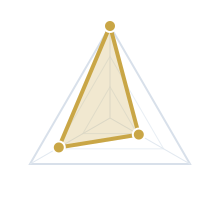
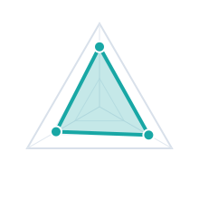

SAP Academy | Field Experience 1
From White Belt to Field-Ready Solution Advisor
How I will progress from Academy fundamentals to a field-ready SuccessFactors Solution Advisor in 10 weeks.
Field Objectives
Field Experience Objectives
Top 5 priorities for my FE1 journey
Learn How the Field Moves
FocusBuild Demo Storytelling Confidence
FocusStrengthen Objection Handling
FocusMove from Observation to Contribution
FocusDojo Style
My fighting style shapes how I prepare, ask, and contribute.
Before stepping onto the mat, I need to understand my own motives and conflict response.
Carry-over move: enter every FE1 conversation with one ask, one insight, and one next step.

Motives
MVS: HUB
People 36 | Process 30 | Performance 34
Motivated by flexibility and collaboration. Adapting to different people or situations. Open-minded. Can work across teams. Like to connect different perspectives.

Conflict
Sequence: G-B-R
Analyze 50 | Accommodate 32 | Assert 18
Under conflict, I first analyze the situation. If needed, I accommodate to maintain harmony and only assert when necessary.
Training Path
From Academy fundamentals to field-ready contribution.
Each belt represents a higher level of field readiness — moving from exposure, to practice, to contribution.
White Belt
Set Up Exposure & Foundation
Foundation Built
Yellow Belt
Shadow Widely & Study
Pattern Recognition
Orange Belt
Practice Safely & Start Contributing
Guided Practice
Green Belt
Field Application & Demo Readiness
Independent Contribution
Blue Belt
Field-Ready Reflection & Next Step
Field-Ready Ownership
Progression logic: advancement is based on capability maturity — from learning and observing, to practicing safely, then contributing with confidence and evidence.
Training Tracks
Parallel Training Tracks | Shadow, Practice, Contribute
My weekly operating model turns field uncertainty into controlled actions.
01Set Up Exposure
- Align with mentor / FLL
- Identify active opportunities by checking with the SuccessFactors team regularly
- Maintain KPI tracker and reflection log
02Shadow Widely
- Shadow meetings with Sales / SA / CSM where possible
- Join internal account planning calls
03Practice Safely
- Schedule internal demo practice
- Practice the SuccessFactors demo flow independently
04Contribute Progressively
- Support account research
- Co-work RFx / RFP sections
- Support demo preparation
Contribution starts with usefulness: research, notes, discovery questions, demo storyline, RFx drafting, then selected demo exposure.
Reflection Notes
My SWOT Analysis | Knowing My Game Before Stepping on the Mat
A concise view of where I can contribute now and where FE1 must stretch me.
Grip CheckS-01
Strength
- Clear presenter; structures ideas for easy follow-up
- Cross-functional communicator; keeps teams aligned
- I like to connect topics to the bigger picture
- Curious problem-solver; digs into the why
Drill FocusD-02
Working On
- Deepen SuccessFactors module expertise
- Improve client output autonomy, speed, and quality
- Build objection-handling confidence
- SA role must emphasize business value
Opening LaneO-03
Opportunity
- Build SuccessFactors AI capability expertise
- Shadow senior SAs in key demos and discussions
- Share simplified technical updates internally
Pressure ReadP-04
Threats
- Deal strategy may shift quickly
- AI pace may change solution positioning
- Market may question traditional SaaS value
Field Mission
How I Will Create Field Exposure
A practical sequence for turning requests into contribution.
Identify
- Ask mentor/FLL which opportunities are active
- Review where SuccessFactors support is needed
- Identify accounts suitable for shadowing or prep support
Ask
- Chat with Sales and ask if I can join account/client meetings
- Ask SAs if I can shadow demo preparation
- Ask CSMs if I can observe adoption conversations
Add Value
- Prepare account research
- Draft discovery questions
- Summarize meeting notes
- Support demo storyline or RFx preparation
Earn Demo Opportunity
- Start with internal demo
- Get mentor feedback
- Target selected live demo section by Week 5-7 if appropriate
I cannot fully control whether a customer meeting or live demo is available, but I can control how early I ask, how well I prepare, and how consistently I practice and study SuccessFactors.
Field Opportunities | Where I Can Learn and Contribute
Each account offers a different opportunity to observe, practice, and contribute to real SuccessFactors work.
The University of Hong Kong
Higher Education
The University of Hong Kong
Higher Education
Field Activity
- Support preparation and delivery of core HR demo scenarios
- Cover key use cases including HR operations, multiple job records, performance review, delegation, organizational hierarchy, timesheets, and PeopleSoft integration
Expected Outcome
- Strengthen understanding of end-to-end core HR processes
- Build confidence in preparing functional SuccessFactors scenarios and personas
- Improve fluency in core HR use cases and demo delivery
Harrow International School
Education
Harrow International School
Education
Field Activity
- Support positioning of a broad SuccessFactors suite
- Assist with RFP preparation and demo workshop planning
- Focus on key HR and talent modules for an early-stage opportunity
Expected Outcome
- Build stronger understanding of education-sector priorities
- Learn how integrated SuccessFactors solutions address client needs
Maxim's Hong Kong
Food & Beverage / Catering
Maxim's Hong Kong
Food & Beverage / Catering
Field Activity
- Support Employee Central positioning
- Assist with RFP preparation and demo workshop planning
Expected Outcome
- Build stronger understanding of F&B sector priorities
- Learn how to position Employee Central in early-stage conversations
- Improve Employee Central value articulation
Bank of East Asia
Financial Services
Bank of East Asia
Financial Services
Field Activity
- Support SmartRecruiters positioning
- Assist with RFP preparation and demo workshop planning
Expected Outcome
- Learn how to position recruiting solutions in a financial services context
- Develop stronger knowledge of SmartRecruiters and SAP's recruiting value proposition
- Gain stronger exposure to deal support
Support Network
Coaches and Training Partners | Feedback Makes the Game Stronger
I will actively use this network for feedback, exposure, and collaboration.
Core Coaches
SL
Steven LiuFLL
KS
Kelvin SinMentor
JO
Jean OoiRAD
Training Partners
SL
Sophie LiuAcademy Buddy
HL
Howard LiAcademy Buddy
FZ
Fenix ZhouAcademy Buddy
Field Network
AW
Agnes WongSuccessFactors Sales
TC
Ted ChinSuccessFactors CSM
TC
Tao ChengSuccessFactors CSM
FE1
Other Sales / SA / CSMFE1 colleagues to connect with
A game is never won alone - FE1 success depends on feedback, exposure, and collaboration.
Development Goals
Development Scorecard | Belt Promotion Criteria
Detailed Development Passport goals, actions, support, and evidence.
01
Develop the ability to draft compelling RFP/RFI responses for SAP SuccessFactors
Key Actions
- Shadow a senior Solution Advisor on 3 active RFP response end-to-end processes
- Draft responses for assigned modules
- Submit draft responses for mentor review
Support
FLL; Mentor; Service team
02
Build capability to lead demos for SuccessFactors modules (EC & PMGM)
Key Actions
- Study Employee Central and the Performance and Goal Management modules
- Completed internal demo for these two modules to my mentor
Support
FLL; Mentor
03
Build capability to conduct end-to-end setup and preparation for demo sessions
Key Actions
- Help prepare the SuccessFactors environment before demo sessions
- Help prepare demo scripts before demo sessions
Support
FLL; Mentor
04
Deepen domain expertise in standard HR business processes and industry best practices
Key Actions
- Shadow at least 3 client discovery or demo sessions with HR teams
- Observe diverse business requirements
Support
FLL; Mentor
05
Strengthen understanding of SuccessFactors product capabilities
Key Actions
- Discuss with the team regarding modules I can focus on
- Start using the demo environment
- Self-learn SAP materials when free
Support
FLL; Mentor
06
Refine pre-sales presentation style to better connect solution value with client needs
Key Actions
- Complete at least 10 internal dry runs for a complete demo of SuccessFactors
Support
FLL; Mentor
Tracking rhythm: Friday KPI evidence update | semiweekly / bi-weekly mentor review | monthly FLL review | Final FLL review
Success Definition
FE1 Success Definition | What Field-Ready Means
The simplified KPI summary stays secondary to the detailed Development Passport evidence.
Tier 1 - High-Impact KPI
- Demo: 1 selected live demo section (subject to internal readiness and alignment);10 internal demo; 10 demo script
- Discovery: join 3 discovery call session; 3 discovery-to-demo strategy
Tier 2 - Applicable KPI
- RFX: Supported 2-3 RFX/RFP responses, including proposal drafting and initial response preparation, in collaboration with the team
- Customer Meeting: 15 meetings shadowed; Contribute in 2-4 customer-facing meetings joined if allows
Tier 3 - Supporting KPI
- Research: 2 account summaries with value hypotheses
- Sales cycle: notes on objections, positioning decisions, and stakeholder dynamics
- Cross-role support: 6-8 stakeholder chats
Training Timeline
10-Week Training Camp | A Deeper Look into Field Experience
Controlled activities across 10 weeks, with evidence captured through the Academy KPI tracker.
W1W2W3W4W5W6W7W8W9W10
Kickoff & Alignmentalign
SuccessFactors Solution Focusstudy + practice
Customer / Account Exposurerequest / shadow if available
Demo Preparationdry runs + demo prep
RFx / RFP Response PracticeRFx drafts + review
Discovery PracticeShadow + prepare questions + strategy forming
FE1 Recapfinal evidence + recap
W1 Mentor/FLL alignmentW3 Discovery question bankW4 Internal dry run #1W5-W7 Target selected demo section if approvedW8 10-minute solution briefingW10 Final KPI scorecard + FE1 recap
June Field Notes / July Focus
June and July field-practice calendars.
These boards mirror the calendar style from the plan: navy headers, gold week markers, soft paper cards, judo-inspired accents, and editable activity cells.
Click any calendar cell to edit. Changes autosave in this browser.
柔道
JUDO
June Calendar | Foundation & First Practice
Building core knowledge, client exposure, and demo readiness.
Mon
Tue
Wed
Thu
Fri
1Week
FE1 Kickoff
- Align with mentor
- Client meeting: SmartRecruiter introduction to BEA
Catch up with CSM team to set expectations
- Support system configuration for demo preparation
Self-learning:
- Focus on SuccessFactors Performance Management Module
- Study previous SF presentation deck
Catch up with Sales team to set expectations
Client Meeting:
- HKU Tender Presentation
2Week
Co-work with team on RFP responses.
Client Meeting:
- Sino Employee Central Payroll Demo
Self-learning:
- Performance Management Module
Add activity
Internal Sharing:
- Performance Management Module Demo
- SuccessFactors Data Process Flow Presentation
Internal Sharing:
- SuccessFactors Portfolio Slide Presentation
- Why SF Presentation
3Week
Align with Sales
on relevant meetings to join and any support needed.
Client Meeting:
- SAP Executive Exchange Event
Align with CSM
on relevant meetings to join and any support needed.
Internal Sharing:
- SuccessFactors Employee Central Demo
Add activity
4Week
Add activity
Client Meeting:
- Discovery Session
Add activity
Internal Sharing:
- Performance & Goals Management Demo
Add activity
5Week
Co-work with team on RFP responses.
Align with CSM on relevant meetings to join and any support needed.
Add activity
Add activity
Add activity
Add activity
Activity legendClient MeetingsInternal SharingSelf-LearningCatch-ups / AlignmentCollaboration / RFP SupportAdd Activity
柔道
JUDO
July Calendar | Practice & Demo Readiness
Deepening product fluency, building demo confidence, and progressing toward client-facing delivery.
Mon
Tue
Wed
Thu
Fri
1Week
Add activity
Add activity
Align with Sales
Join relevant meetings and provide support as needed.
Internal Sharing
- Joule and Embedded AI Demo
Internal Sharing
- Report Story Demo
2Week
Add activity
Client Meeting
- Discovery Session
Add activity
Internal Sharing
- WalkMe Presentation & Video Demo
- SF Admin Demo
Add activity
3Week
Align with CSM
Join relevant meetings and provide support as needed.
Co-work with team on RFP responses
Align with Sales
Join relevant meetings and provide support as needed.
Internal Sharing
- Employee Central & Performance and Goal Management Demo to FLL
Add activity
4Week
Add activity
Client Meeting
- Discovery Session
Add activity
Add activity
Add activity
5Week
Add activity
Add activity
Add activity
Add activity
Add activity
Activity legendClient MeetingsInternal SharingSelf-LearningCatch-ups / AlignmentCollaboration / RFP SupportAdd Activity
Plan B
Plan B | If Live Field Opportunities Are Limited
Even if pipeline availability changes, I can still progress through controlled learning, practice, and contribution.
Increase internal demo dry runs
Practice with repeated mentor feedback.
Shadow recorded / past demos
Capture talk tracks, objections, and storyline structure.
Prepare mock discovery questions
Use target accounts to simulate client context.
Create sample demo storylines
Practice pain -> solution -> value storylines.
Draft reusable RFx sections
Build sections from past examples and mentor review.
Study additional SF modules
Deepen fluency when field calendar is lighter.
Conduct internal solution briefing
Turn study into explainable business value.
Ask for simulated client Q&A
Practice objection handling and stakeholder confidence.
Maturity move: keep progressing even when the external field environment is not fully controllable.
AI Workbench
Top 3 AI Use Cases in My Field Role
Responsible AI can help me prepare faster, tell stronger stories, and draft clearer first-pass materials.
Use Case 1
Create deliverables
Description
Use AI to draft emails, meeting minutes, and PowerPoint content more efficiently
Benefit
Saves time on daily tasks and improves productivity.
Tools
ChatGPT; EKX
Use Case 2
Demo Storyline Builder
Description
Convert client pain points into a clear and structured demo storyline.
Benefit
Accelerates storyline creation and ensures stronger alignment with SuccessFactors value.
Tools
EKX; Digital Launchpad
Use Case 3
RFx / RFP Response Drafting Support
Description
Draft RFx structures, rewrite technical content into business language, and check consistency.
Benefit
Reduces drafting time while improving clarity.
Tools
ChatGPT; EKX; Digital Launchpad
Confidentiality note: use AI responsibly and do not input confidential client or restricted SAP information unless permitted.
Next Belt
Guided Practice to Confident Field Contribution
Late October - Late December | Consolidating FE1 learning into higher-impact field activities.
Reset & Prioritize
FE1 feedback + FE2 goals
Demo listDemo Deepening
Demo flows + AI positioning
Demo scriptsDiscovery & Context
Questions + demo direction
Value mapCVJ Exposure
From Discover to Influence
CVJ summaryContribution & Reflection
Demo section + follow-up
FE2 scorecardFE1 = White to Blue Belt foundation | FE2 = deeper practice toward confident field contribution.
Action Items
Immediate Action Items
The first move is to lock alignment, rhythm, and measurable evidence before FE1 accelerates.
- Send invite for Final FLL review
- Send invite for semi-weekly mentor catch-up (Done)
- Confirm target SuccessFactors study modules (Done)
- Notifying Sales/SA/CSM colleagues on the regular catch up
- Ask mentor which opportunities suit shadowing or prep support (Done)
Purpose: create a clear feedback rhythm and avoid a passive start to Field Experience.